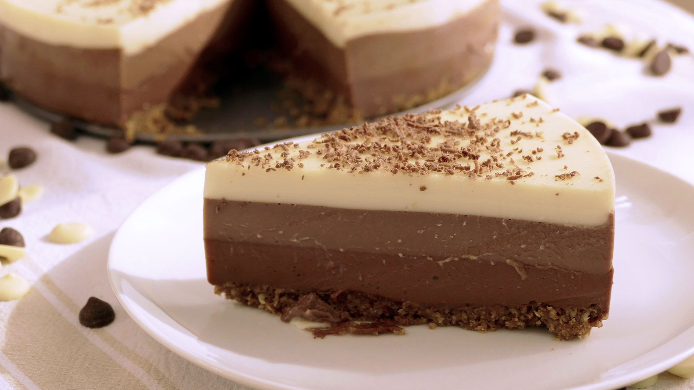

Ingredientes (8-10 personas)
| Producto | Cantidad |
|---|---|
| Galletas tipo María | 200g |
| Mantequilla | 100g |
| Chocolate negro | 150g |
| Chocolate con leche | 150g |
| Chocolate blanco | 150g |
| Nata líquida para montar (35% M.G.) | 600ml |
| Leche entera | 600ml |
| Cuajada en polvo | 3 sobres |

Elaboración
- Tritura las galletas y mézclalas con la mantequilla derretida. Cubre la base de un molde desmontable con la mezcla presionando bien y reserva en el frigorífico.
- Capa de chocolate negro: Calienta en un cazo 200ml de nata y 150ml de leche. En los 50ml de leche restantes disuelve 1 sobre de cuajada. Añade el chocolate negro troceado al cazo hasta que se funda. Vierte la cuajada disuelta, remueve hasta que hierva un par de minutos y vierte con cuidado sobre la base de galleta. Deja cuajar.
- Ralla la superficie del chocolate negro con un tenedor para que la siguiente capa se adhiera bien.
- Capa de chocolate con leche: Repite el mismo proceso con el chocolate con leche, 200ml de nata, 200ml de leche y 1 sobre de cuajada. Vierte despacio sobre la capa anterior con ayuda de una cuchara.
- Ralla suavemente la capa de chocolate con leche.
- Capa de chocolate blanco: Repite el procedimiento con el chocolate blanco, los últimos 200ml de nata, 200ml de leche y el último sobre de cuajada. Vierte con cuidado encima.
- Deja enfriar a temperatura ambiente y luego métela en la nevera un mínimo de 6 horas (mejor de un día para otro).
- Desmolda con cuidado y sirve.